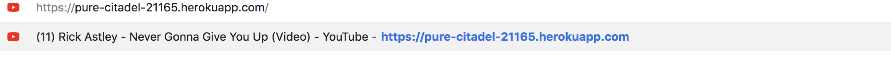
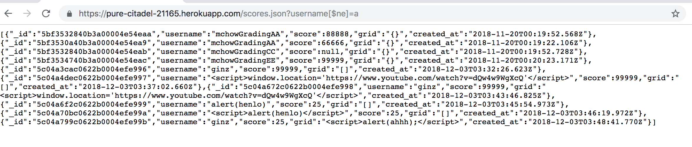
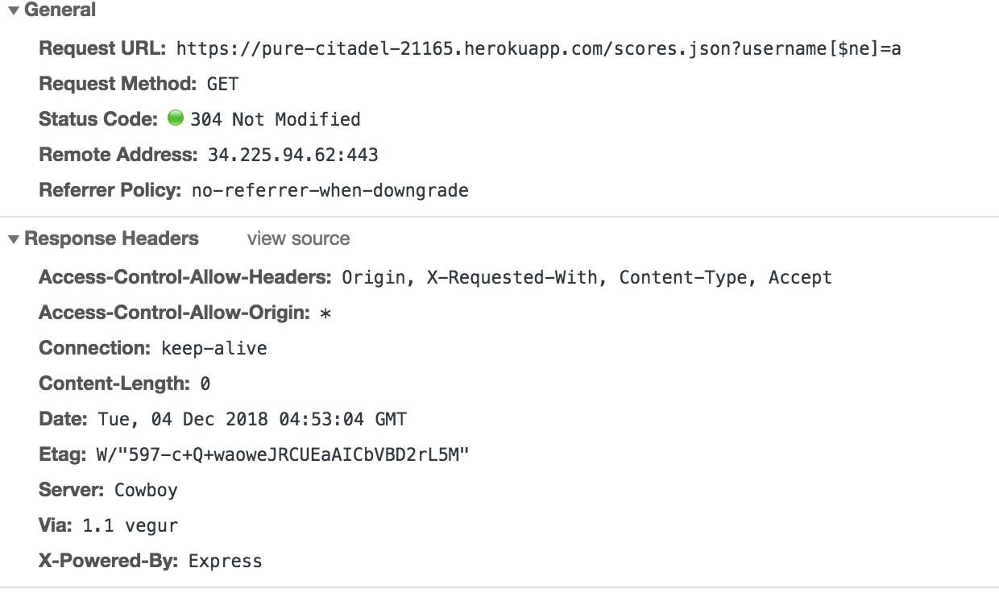

Security Report
Introduction
The product is a server to store high scores for the game 2048.
I was assigned to find vulnerabilities in the server.
Methodology
I used curl to send post requests to the server. I also used chrome to access the server using the url. I initially tried to use cross site scripting (XSS) by submitting post request to the server with JS, which was successful on Chrome; however, if the GET / route is used in Safari all the html tags are displayed as plain text on the site, so the XSS does not reroute the site.
Abstraction of Findings
Issues Found
- XSS:
- Issue found on GET / route, but originates in POST /submit
- High Severity
- I found the issue by submitting JavaScript in a query string with curl and then opening the site in Chrome. Interestingly, XSS does not impact the site when viewed with Safari because all the html tags are rendered in plain text including the script tags. The lack of rendering of the html tags makes the site difficult to view; however, the site is not vulnerable to XSS in this instance.
-
Proof of vulnerability:

- One solution is to remove all special characters from usernames before them in the database.
- Injection Attack:
- Issue found on GET /scores.json route
- Medium Severity
- I found the issue by entering the URL with query string "https://pure-citadel-21165.herokuapp.com/scores.json?username[$ne]=a". This provided me with the entire contents of the database.
-
Proof of vulnerability:

- A solution would be to not allow query strings with special operatores.
- Cross Origin Resource Sharing:
- Issue in index.js.
- High Severity
- I found the issue by reading my partner's code in index.js (where it can be found on lines 20 and 21) and confirmed using developer tools in chrome. As can be seen in the image below, the wildcard '*' is the value of 'Access-Control-Allow-Origin', which is a major vulnerability if there are any files that contain private information accessible from the server.
-
Proof of vulnerability:

- A solution would be to only allow cross origin resource sharing for specific files that are necessary for the server.
Conclusion
I strongly recommend implementing the listed solutions to all secruity vulnerabilities listed previously. All of these solutions would be relatively simple and fast to implement by anyone with a knowledge of JavaScript and node.js.
References